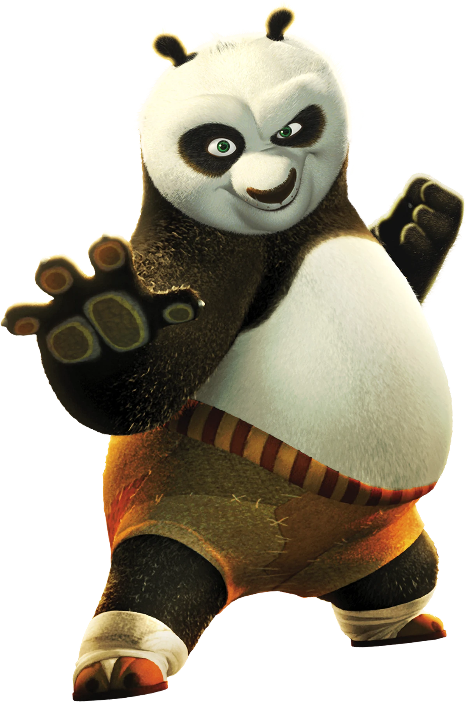
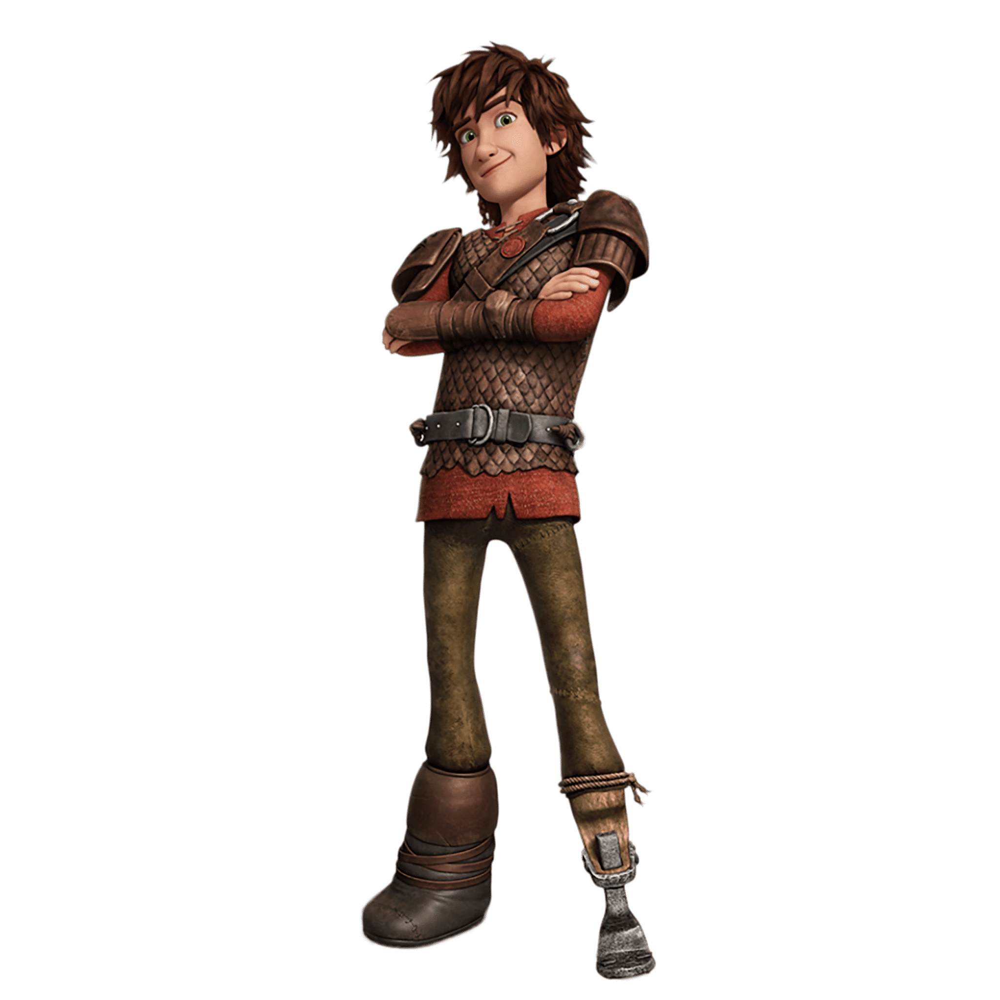
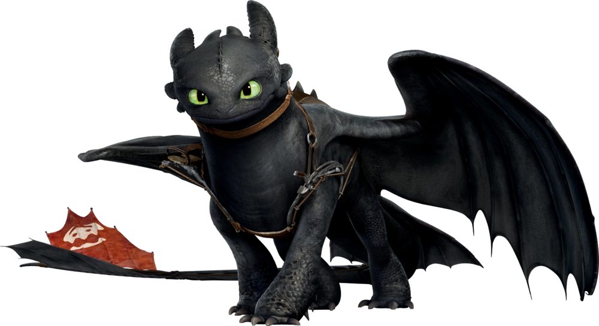

Shrek es un ogro que vive en una casa en un pantano, espantando a los aldeanos que se acercan a su pantano con el fin de cazarlo. Un día conoce a un burro parlante que huía de un grupo de guardias, y estos al ver a Shrek huyen aterrorizados.

estudio de animacion

personajes increibles

conytruyendo sueños


Po es un personaje ficticio y el protagonista de la franquicia Kung Fu Panda. Es un panda gigante que de manera improbable es elegido como el Guerrero Dragón. Él es hijo adoptivo del Sr. Ping, y es uno de los estudiantes del maestro Shifu.

Hipo Horrendo Abadejo III es un joven vikingo que no tiene la misma fuerza y destreza que sus compañeros, por lo que nadie lo toma en serio pese a ser el hijo de Estoico el Vasto, el jefe de la isla.

Chimuelo vivía en el Nido de Dragones en la Isla de los Dragones junto con todos los demás dragones que atacarían Berk y ha nacido unos 15 años antes de los eventos de la primera película. Algún tiempo antes de la primera película, Chimuelo se encontró con un Muerte Susurrante, con quien comenzó un conflicto.

Jack Frost es una figura élfica legendaria perteneciente al folclore del norte de Europa; se cree que este mito proviene de los anglosajones y nórdicos.